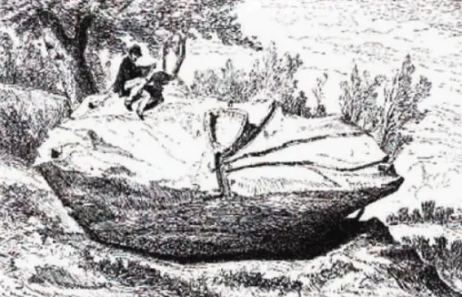
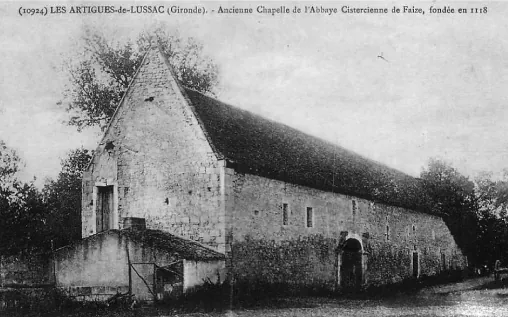
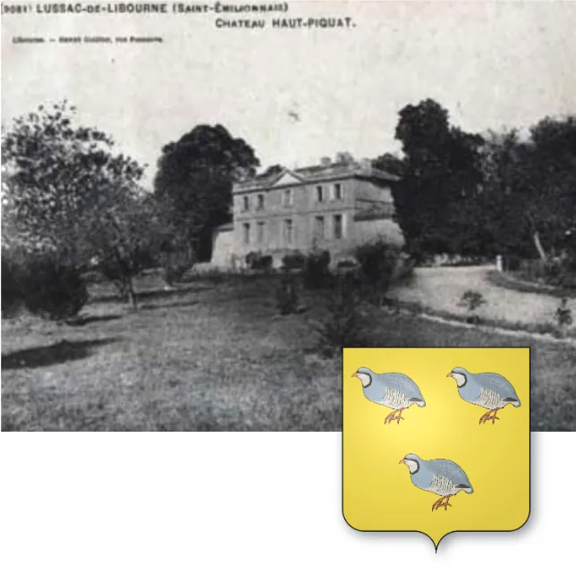
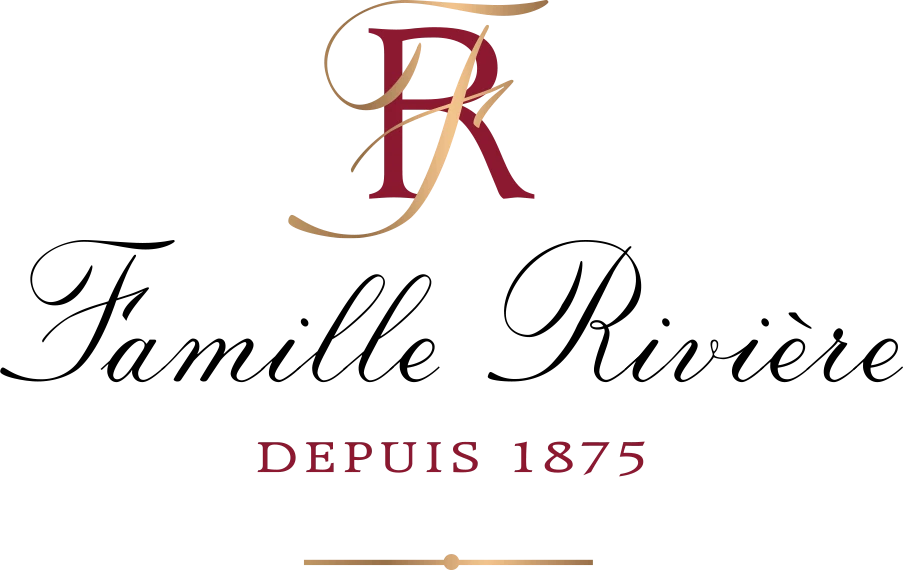
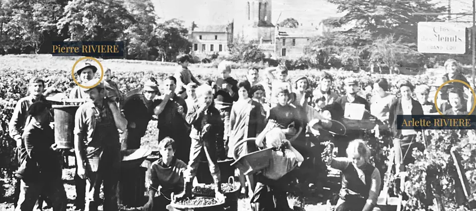
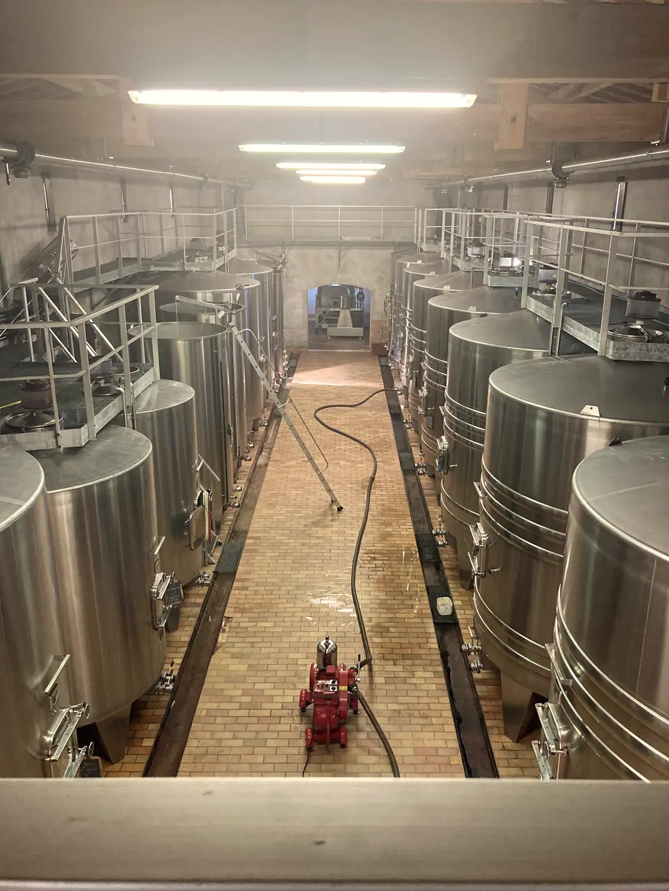
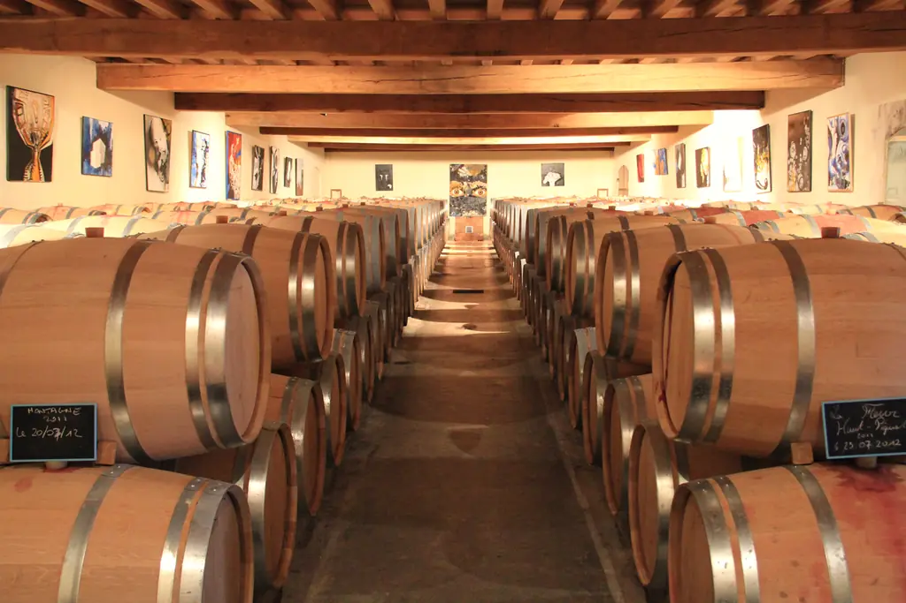
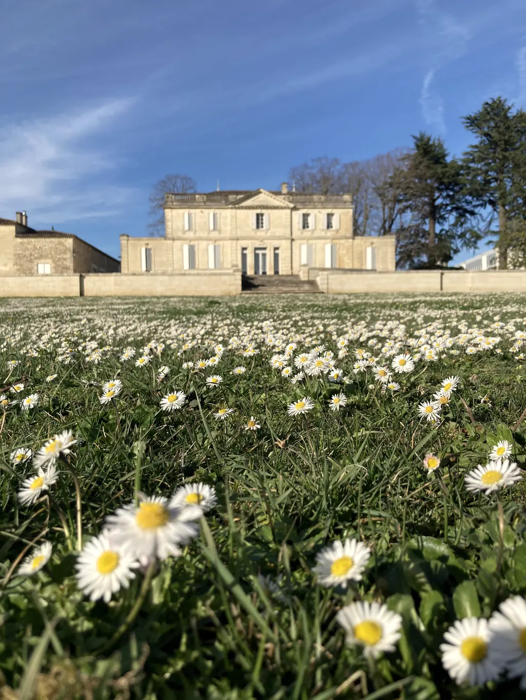

Du mégalithe gaulois au chai de 480 barriques, chaque date est gravée dans la pierre blonde du Libournais.From the Gallic megalith to the 480-barrel cellar, every date is carved into the blond stone of the Libournais.
HistoireHistory
2 000 ans gravés dans la pierre2,000 years carved in stone
« Bienvenue au Château Haut-Piquat, un bijou unique dans un lieu magique béni des dieux ! »“Welcome to Château Haut-Piquat, a unique jewel in a magical place blessed by the gods!”

Ier s.1st c.
La fondation de LussacThe founding of Lussac
Un Gallo-Romain, Luccius, installe sa villa au milieu des vignes et fonde « Luccianus ». Au cœur du vignoble, le mégalithe de Picampeau servait aux cérémonies druidiques.A Gallo-Roman, Luccius, built his villa among the vines and founded “Luccianus”. In the heart of the vineyard, the Picampeau megalith was used for druidic ceremonies.

XIIIe s.13th c.
L'abbaye de FaizeFaize Abbey
Les moines de l'abbaye de Faize restaurent le vignoble de Lussac. Ses vins partent par cargaisons entières vers la cour d'Angleterre.The monks of Faize Abbey restored the Lussac vineyard. Its wines were shipped by the cargo-load to the English court.

1825
Construction du châteauThe château is built
Le blason de Lussac, trois perdrix sur fond d'or, rappelle l'ancienne activité céréalière. Au XIXe siècle, l'essor du commerce du vin redonne la première place à la vigne.Lussac's coat of arms, three partridges on gold, recalls its cereal-growing past. In the 19th century, the booming wine trade put the vine back in first place.

1875
Maison RivièreMaison Rivière
Métayers, vignerons, tonneliers, maîtres de chai et négociants : la famille Rivière est établie à Saint-Émilion, comme viticulteurs et négociants, depuis 1875.Sharecroppers, winegrowers, coopers, cellar masters and merchants: the Rivière family has been established in Saint-Émilion as growers and merchants since 1875.

1966
Vendanges au Clos des MenutsHarvest at Clos des Menuts
Jean-Pierre grandit entre la propriété de ses grands-parents à Saint-Christophe-des-Bardes et le Clos des Menuts, à Saint-Émilion, avec son frère Philippe.Jean-Pierre grew up between his grandparents' estate in Saint-Christophe-des-Bardes and Clos des Menuts in Saint-Émilion, with his brother Philippe.
1972
La rencontreThe encounter
Avec la complicité de son père Pierre, Jean-Pierre Rivière cherche un beau terroir pour faire son propre vin. En 1972, il acquiert Château Haut-Piquat et en restaure le vignoble, le château et le parc.With the help of his father Pierre, Jean-Pierre Rivière looked for a fine terroir to make his own wine. In 1972 he acquired Château Haut-Piquat and restored its vineyard, château and park.

1989
Le nouveau cuvierThe new vat room
Un cuvier ultra moderne est construit, en cuves inox déjà équipées de thermorégulation.A state-of-the-art vat room is built, with stainless steel tanks already fitted with temperature control.

2000
Le chai à barriquesThe barrel cellar
Un nouveau chai voit le jour : il accueille 480 barriques de chêne français.A new cellar is built: it holds 480 French oak barrels.

2019
Haute Valeur EnvironnementaleHigh Environmental Value
Les efforts pour l'environnement et la biodiversité sont récompensés par la certification HVE de niveau 3.Efforts for the environment and biodiversity are rewarded with level 3 HVE certification. 2018 ou 2019 selon les pages2018 or 2019 depending on the page